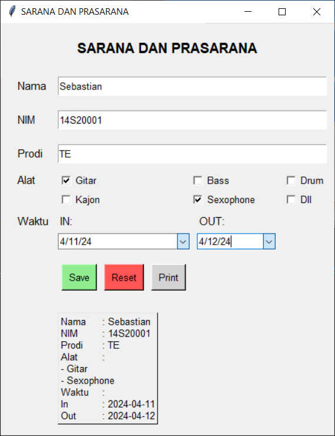
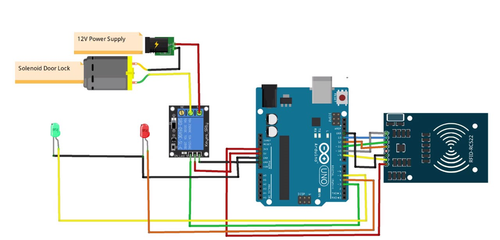

Home
As an Electrical Engineering student at Del Institute of Technology, I focus on IoT, Microcontroller, and PLC with experience in C and ladder logic programming languages. I am actively involved in renewable energy and electric vehicle projects, leading the development of control and energy management solutions. My goal is to continue contributing to innovation in IoT and other cutting-edge technologies, while expanding my horizons in renewable energy. I aspire to be a sustainable and innovative electrical engineering industry leader, driving technological advancement for environmental sustainability and human prosperity.
Projects
 Facilities and Infrastructure Performance Optimization Using Python and GUI
Facilities and infrastructure performance optimization using Python and GUI involves developing interactive and efficient software solutions. Through a graphical user interface (GUI), users can easily access and utilize the features provided to optimize the use of facilities and infrastructure. Python is used for sophisticated data processing and modeling, enabling in-depth analysis of system performance. With the integration between Python and the GUI, users can perform intuitive monitoring, modeling, and decision-making, thus ensuring optimal performance of facilities and infrastructure in accordance with the set needs and objectives.
 Accuracy and Efficiency Analysis of Automatic Fire
Extinguishing System using ATMega8535 and Fire Sensor
Accuracy and Efficiency Analysis of Automatic Fire
Extinguishing System using ATMega8535 and Fire Sensor
Analyzing the accuracy and efficiency of an automatic fire extinguishing system using ATMega8535 and a flame sensor involves an in-depth evaluation of the system's response in detecting and tackling fires. Through the use of sensitive flame sensors, the system is able to quickly identify fires and provide a timely response. The evaluation focused on sensor reliability, system response time, and extinguishing capability. In addition, the efficient use of resources such as electrical power was also considered. This analysis helped to refine and improve the performance of the system to provide better protection against fire, in accordance with the needs and applicable safety standards.
 Doorlock System use RFID
This is an Arduino-controlled electronic door lock system that uses an RFID reader for authentication. It consists of a solenoid door lock, 12V power supply, LEDs, RFID module, and the Arduino board as the controller. The operation involves presenting a valid RFID tag to the reader, which signals the Arduino to activate the solenoid lock and green LED to unlock the door. After a set delay or tag removal, the Arduino de-energizes the solenoid, locking the door again and potentially illuminating the red LED. The Arduino's programming manages RFID authentication, lock control, and LED status based on the RFID reader input, enabling keyless entry via RFID cards or fobs instead of traditional keys.